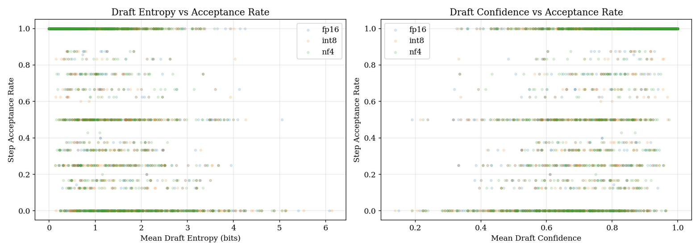
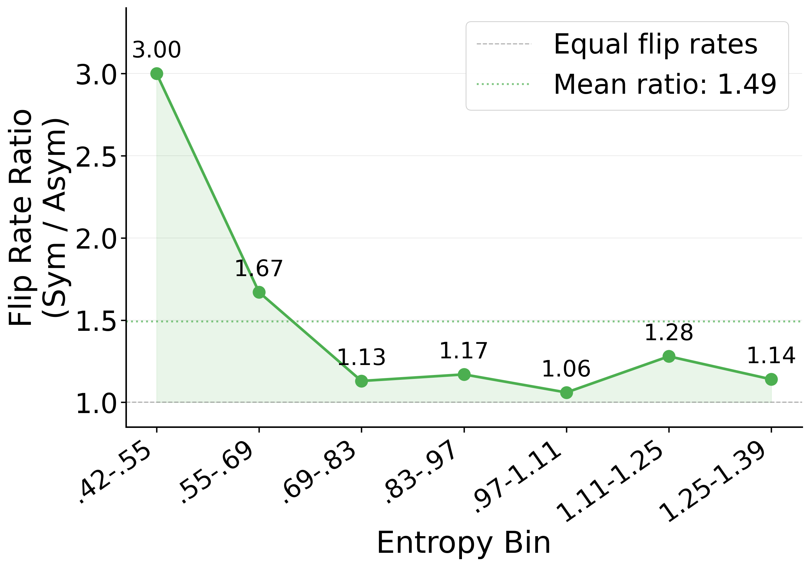
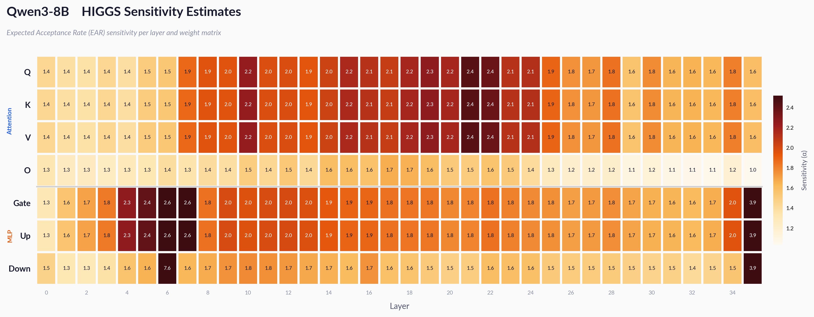
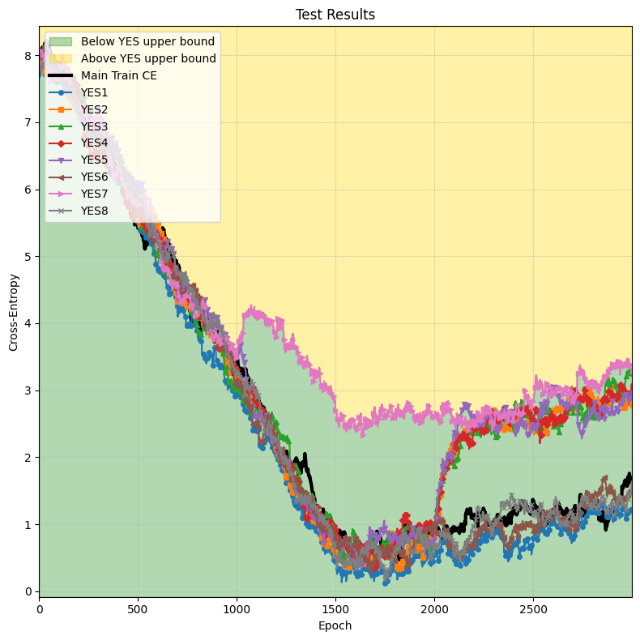
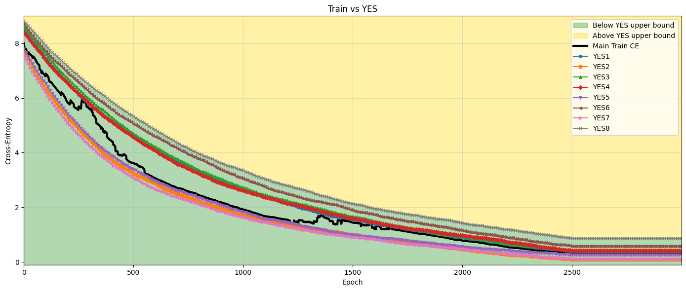
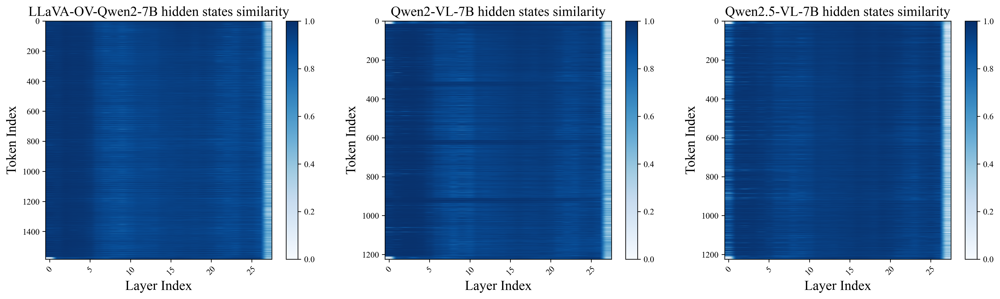
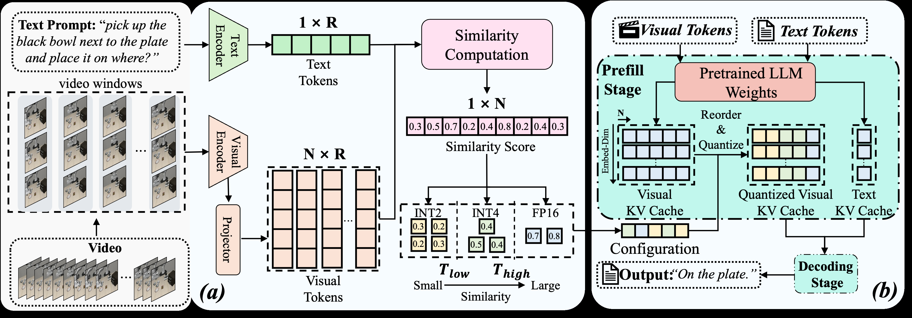
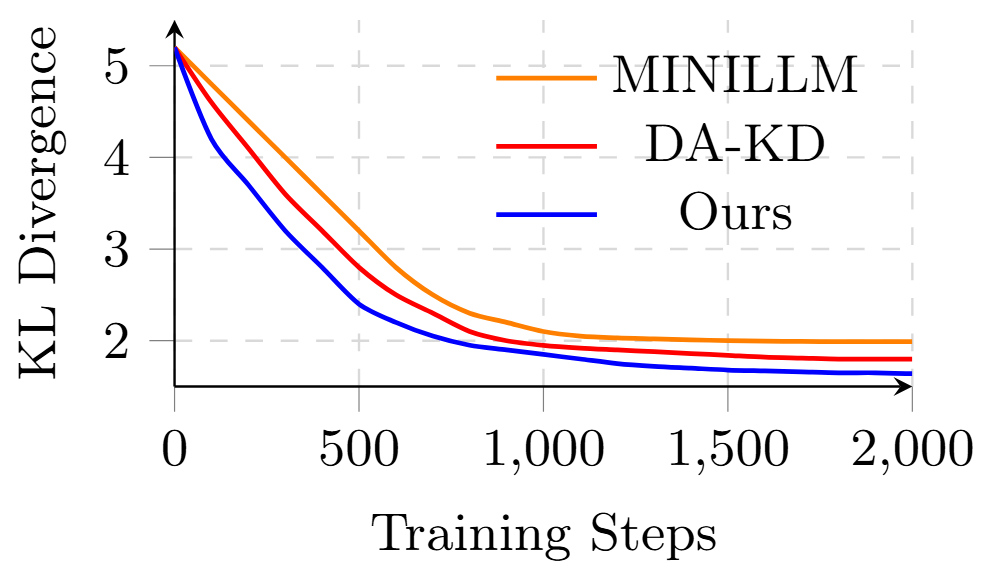
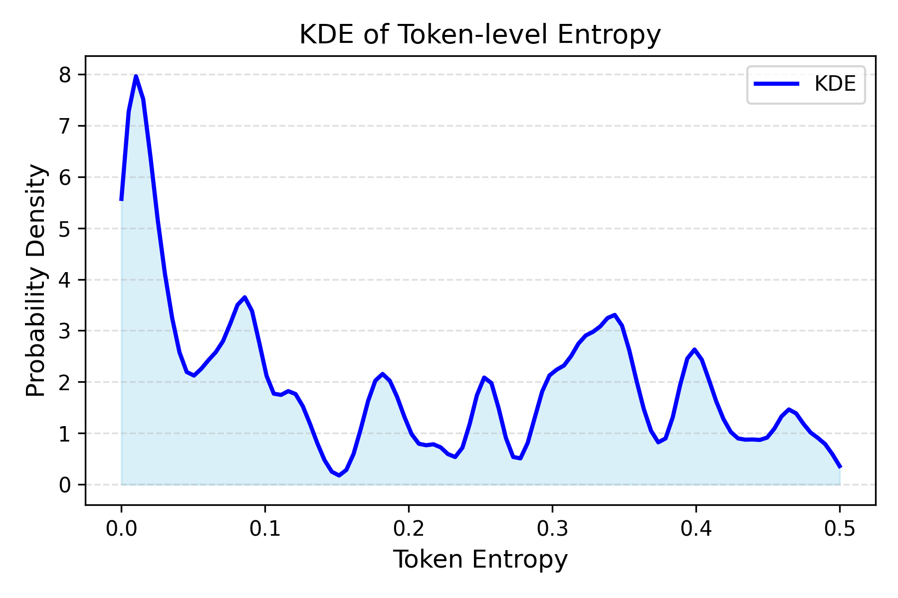

🎯 背景
投机解码（Speculative Decoding）是加速大语言模型推理的关键技术，通过小型草稿模型提出候选token，再由大型目标模型验证。其中投机长度γ（每步草稿模型提议的token数）是核心超参数，几乎所有现有系统使用固定的γ（通常为4），但实证证据表明最优值因任务类型和压缩级别而异。
💡 动机
现有固定γ的投机解码系统在不同压缩级别（FP16、INT8、NF4）下表现不佳，无法自适应调整。作者希望开发一个轻量级自适应控制器，根据草稿模型自身的信号（熵、置信度、接受率）动态选择每步的最优γ，最大化每步预期生成的token数。
🔧 技术点
1. 压缩感知γ分析：在4类任务、4种投机长度、3种压缩级别下收集5,112条步级记录，发现最优γ随压缩体制变化。2. 草稿模型信号预测：草稿模型置信度和熵与接受率强相关（≈0.56），是γ选择的有效预测信号。3. 轻量级MLP控制器：训练小型MLP根据草稿信号实时选择γ，每决策仅0.34ms开销（<0.5%步时）。
📈 收益点
相比固定γ=4基线，SpecKV实现56.0%的吞吐量提升，统计显著（p<0.001）。在FP16、INT8、NF4三种压缩级别下均有效，且所有分析数据、模型、notebook开源发布。
📝 总结
SpecKV首次将压缩级别纳入投机解码γ的自适应选择，通过草稿模型自身信号实现每步动态优化。以极小开销获得显著推理加速，为不同压缩体制下的LLM部署提供了实用的自适应推理方案。


🎯 背景
模型量化已成为高效LLM部署的必需技术，但现有方法存在明显权衡：GPTQ和AWQ等实现实用压缩但有损；无损技术保真但通常不加速推理。如何在压缩和保真之间取得平衡仍是开放问题。
💡 动机
作者希望探索统计无损压缩的中间地带——在严格无损和纯有损之间找到可量化、可解释的保真级别，并建立系统化的 fidelity metric 来指导量化实践。
🔧 技术点
1. 三级无损定义：提出任务无损（task-lossless，零样本精度在自然采样方差内）、分布无损（distribution-lossless，EAR≥0.99）和严格无损三种层次。2. EAR保真指标：Expected Acceptance Rate作为直接可解释的保真度量。3. γ²方差定律：证明对称量化相对于非对称量化的噪声方差膨胀γ²倍，论证非对称量化的必要性。4. SLQ层非均匀量化：采用非对称量化和宽位宽搜索，实现逐层非均匀量化。
📈 收益点
SLQ实现任务无损压缩低至3.3 bits/parameter，分布无损压缩平均5-6 bits/parameter，推理速度提升1.7-3.6倍（相对FP16，优化内核）。代码已开源。
📝 总结
SLQ通过建立统计无损量化的理论框架和三级保真定义，为LLM量化提供了从理论到实践的系统化方法。非对称量化的γ²方差定律和EAR指标为量化 fidelity 提供了可解释的工程指导。


🎯 背景
深度神经网络训练是否有效优化仍难以判断，训练发生在高度非凸 landscapes 中，标准指标对层-wise 学习质量的可视性有限。对于Transformer语言模型，训练成本高昂，模型常被冻结复用， poorly optimized layers 可能静默降低性能。
💡 动机
现有训练监控依赖聚合损失曲线，无法揭示层-wise 的优化不足。在低比特（二值化和量化）设置下，训练动态尤其脆弱，需要更精细的诊断工具来暴露隐藏在总体损失下的效率问题。
🔧 技术点
1. 层-wise Peeling框架：每个Transformer层针对训练模型的中间表示进行局部优化。2. 轻量级参考解：构建层特定的参考解，通过不同置换将层投影到多个中间输出。3. 多中间输出投影：获取可达到的基线，实现细粒度的 under-optimized layers 诊断。4. 低比特有效性：在二值化和量化设置下分析依然有效。
📈 收益点
实验表明，层-wise参考界在训练各阶段能匹配甚至超越训练模型，暴露聚合损失曲线隐藏的无效性。在低比特设置下，该分析能一致区分表面收敛和有效最优性，揭示了仅依赖训练损失不可见的优化机会。
📝 总结
Peeling框架通过层-wise局部优化参考解，为Transformer训练监控提供了精细诊断工具。在低比特设置下依然有效，帮助研究者区分真实收敛和表面收敛，为训练效率优化提供了新视角。


🎯 背景
视频语言模型（VLMs）的视觉token序列过长，导致推理延迟和GPU内存占用过高。现有KV缓存混合精度量化方法基于token粒度，搜索过程耗时且硬件计算效率低。
💡 动机
作者希望开发一种更高效的KV缓存混合精度量化方法，避免token粒度的搜索开销和硬件低效问题。通过窗口级别的相似性分析，快速确定最优位宽配置并优化计算流程。
🔧 技术点
1. 窗口级量化搜索：基于视觉token窗口与文本提示的相似性分数，快速确定KV缓存窗口的最优位宽配置。2. 窗口级KV缓存计算：量化前重排序KV缓存窗口，避免混合精度量化导致的硬件计算低效。3. 精度保持机制：通过相似性引导确保模型精度不受损。
📈 收益点
WindowQuant在多个数据集上的实验表明，其优于现有SOTA VLM模型和KV缓存量化方法。通过窗口级设计，显著减少了搜索时间并提升了推理计算的硬件效率。
📝 总结
WindowQuant通过窗口级相似性分析实现混合精度KV缓存量化，解决了VLM推理中的延迟和内存瓶颈。在保持精度的同时，提升了搜索效率和硬件计算效率，为长视觉序列的VLM部署提供了实用方案。


🎯 背景
大语言模型在多个领域取得了卓越性能，但其巨大的计算和内存需求阻碍了在资源受限环境中的部署。知识蒸馏通过将大教师模型的知识转移到小学生模型来解决这一问题，但现有方法通常对所有token一视同仁。
💡 动机
不同token对模型决策的贡献不相等，统一处理导致知识转移效率低下。作者希望利用教师输出的熵来引导蒸馏过程，对困难token给予更多关注，对简单token高效处理，实现token级的自适应知识迁移。
🔧 技术点
1. token级课程学习：根据token熵动态调整训练焦点，从低熵到高熵token逐步过渡。2. 熵感知温度调整：基于token熵动态调整蒸馏温度，更好捕获教师置信度模式。3. 双分支架构：对简单token使用高效logits-only蒸馏，对困难token使用深度特征蒸馏。4. 自适应权重分配：根据token不确定性分配不同的蒸馏深度。
📈 收益点
广泛实验验证了该方法的有效性和合理性。EGAD在标准基准上一致超越SOTA基线，token级自适应策略显著提升了知识转移效率，使小学生模型更好地继承教师能力。
📝 总结
EGAD通过熵引导的token级自适应蒸馏，解决了传统蒸馏方法中token贡献不均的问题。课程学习、温度调整和双分支架构的三重设计，实现了高效且精准的知识迁移，为资源受限场景下的小模型部署提供了新方案。